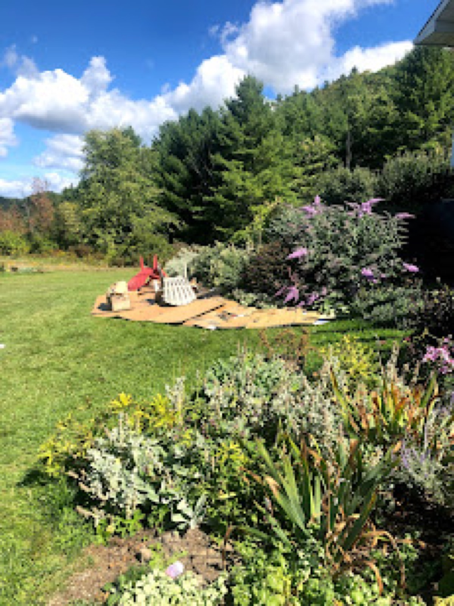

February 2021 · Part 2
Lessons Learned: A Quick List (Part 2)

I’ve spent quite a bit of time in the garden, especially in the past couple years. Living in a rural community with workable land and with access to public spaces for gardening has kept me pretty focused (and isolated.) When I moved to Charlotte about eight years ago, I had this vision of a garden on my property that resembled a botanic garden. While I will perpetually be short of reaching this level of excellence, my pursuit of creating a personal eden continues unabated.
That all being said. I have made a tremendous amount of mistakes. I have killed plants that I was told “wouldn’t die no matter what you do.” I have planted “heirloom” gifts that have survived in gardens for decades only to watch them turn brown and fall over. I have overwatered, under watered, and forgotten about critical tasks that has caused damage only curable with a pickaxe.
Here is a list of things I have reflected on based on my experience. I write this list primarily for myself. If you glean something from it that’s great. Perhaps my mistakes might save you the headache, sore muscles, or some cash.
Things I learned not to do:
- Don’t bother removing grass by hand, smother it. It’s easier on your back and gives all of those cardboard boxes purpose. Build soil, don’t take away from it.
- Plants die, it’s not the end of the world (this is my mantra.) There are more plants and some that are better suited to the growing space. Sometimes it’s your fault, sometimes it’s just what it is.
- Don’t listen to plant tags, plant closer together and fill out those garden beds. You will need to move them around and split them at some point.
- Don’t use mulch if you don’t have to, use ground covers and compost as weed block. Plants will get close, the ground will be covered, and plants likely won’t seem neatly spaced. This is what a living landscape looks like—embrace the chaos.
- Water wisely—the most people who move into Vermont, the less water we can pump out of the ground. Water new plantings, especially trees and shrubs. Don’t water grass, it’s pointless.
- If you are going big in the garden, don’t bother with bagged soil. Bags of soil are useless and wasteful—order compost, manure, or garden soil. You can pick this up or have it delivered. Better yet, make your own compost with food scraps. Whenever I must get bagged soil for houseplants or containers, I end up with a plastic bag that I can’t recycle whose origin is far from my home. I don’t feel good about this purchase so I limit this as much as possible.
Things that worked:
- Let the fields (nature) do some planting. They will naturally bring in aster, goldenrod, milkweed, chicory and more into perennial garden beds. In my garden it has meant the world to pollinators (and it helps your bottom line.)
- Go pesticide free—give everyone a chance at life.
- Don’t fertilize with a bottle of chemicals from the store, use compost. Chemical free, sustainable, garden enhancing compost makes for a better more productive garden.
- Fill out “empty spaces” with seeds pollinators benefit from. If you are looking for annuals try zinnias and sunflowers. If you are looking for a permanent fix, pick up echinacea, black-eyed susan, joe pye weed or goldenrod. Either way the pollinators and your neighbors will thank you for creating something beautiful.
- Add native plants, here is a list of those that you can find in Vermont and this great list from Adjunct Professor, Jane Sorensen: Vermont Pollinator Pallette
- Buy a pollinator garden kit or use it as a reference point for your own garden. If you don’t have any plants or just a few, a kit can double your impact without doubling your effort. Try getting “kits” or collections locally. If you are putting together your own list, go to plant sales hosted by towns or master gardeners.
- Plant annuals together in pots, keeping perennials with perennials. Organizing the garden this way has make watering more manageable. Also, you can overwinter quite a few annuals by bringing those pots inside.
- Listen to a good book or bring a friend. If you are working alone, try a good book about gardening! Doug Tallamy’s “Bringing Nature Home” and podcasts like “In Defense of Plants” and “Plantrama” will give you insight and into your work in the garden.
Filed in the garden journal · February 2021 · Part 2